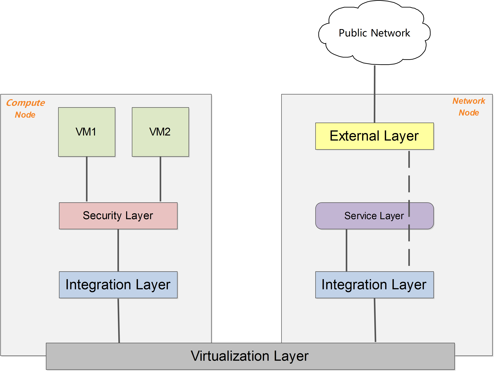

基本概念
Neutron管理下面的实体：
- 网络：隔离的 L2 域，可以是虚拟、逻辑或交换。
- 子网：隔离的 L3 域，IP 地址块。其中每个机器有一个 IP，同一个子网的主机彼此 L3 可见。
- 端口：网络上虚拟、逻辑或交换端口。
所有这些实体都是虚拟的，拥有自动生成的唯一标示id，支持CRUD功能，并在数据库中跟踪记录状态。
网络
隔离的 L2 广播域，一般是创建它的用户所有。用户可以拥有多个网络。网络是最基础的，子网和端口都需要关联到网络上。
网络上可以有多个子网。同一个网络上的主机一般可以通过交换机或路由器连通起来。
子网
隔离的 L3 域，子网代表了一组分配了 IP 的虚拟机。每个子网必须有一个 CIDR 和关联到一个网络。IP 可以从 CIDR 或者用户指定池中选取。
子网可能会有一个网关、一组 DNS 和主机路由。不同子网之间 L3 是互相不可见的，必须通过一个三层网关（即路由器）经过 L3 上进行通信。
端口
可以进出流量的接口，往往绑定上若干 MAC 地址和 IP 地址，以进行寻址。一般为虚拟交换机上的虚拟接口。
虚拟机挂载网卡到端口上，通过端口访问网络。当端口有 IP 的时候，意味着它属于某个子网。
抽象系统架构
无论哪种具体的网络虚拟化实现，一个简化和抽象后的系统架构可以表述为下图所示。

在启用 DVR 特性（J 版本以后支持）之前，所有流量（东西向、南北向）都需要经过网络节点的转发；DVR 特性则允许东西向流量和带有 Floating IP 的南北向流量不经过网络节点的转发，直接从计算节点的外部网络出去。